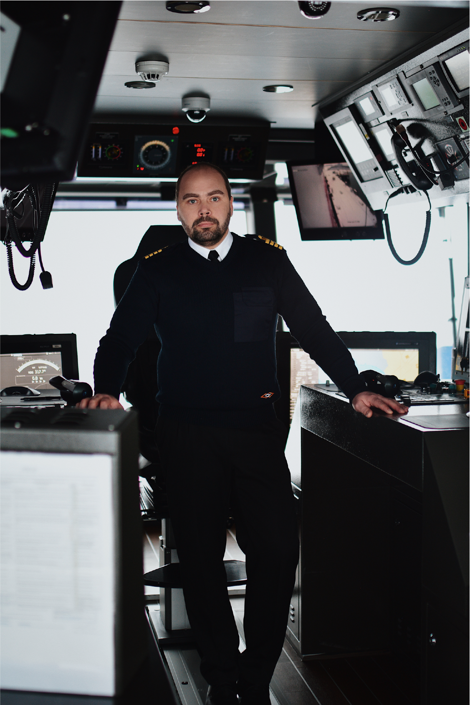

ettevõttesisene koostöö
Meie töötajad on ettevõtte tähtsaimad strateegilised partnerid jätkusuutliku arengu eesmärkide saavutamisel. Peame oluliseks, et töötajad jagaksid ettevõtte väärtuseid ja prioriteete. Mitmekesine ja laialdase kogemuste pagasiga töötajaskond toetab ka ettevõtte kestlikku arengut. Pingutame selle nimel, et leida häid töötajaid ning toetame nende pikaajalist karjääri, pakkudes võimalust end järjepidevalt arendada.
2022. aasta lõpu seisuga töötas TS Laevades 137 töötajat, sealhulgas 2 juhatuse liiget. Ligikaudu 50% meie töötajatest elavad saartel ning seeläbi anname omapanuse ka Eesti suursaarte piirkondlikusse arengusse. Pingutame jätkuvalt selle nimel, et tagada töötajateleohutu töökeskkond ning peame oluliseks, et kogu töötajaskond tunneks ennast ühtse meeskonnana.
Töötajate rahulolu ja pühendumuse indeks vastab TS Laevade äristrateegias püstitatud eesmärkidele
2022. aasta novembris viisime koostöös Rakendusuuringute Keskusega Centar läbi töötajate rahulolu ja pühendumuse uuringu. Uuringus osales 98 töötajat ehk 71% töötajatest. Küsimustik oli põhjalik ja eesmärgiks oli saada töötajatelt ka väärtuslikku tagasisidet erinevate valdkondade kohta. Uuendatud metoodika andis võimaluse analüüsida ettevõttetulemusi võrrelduna Eesti töötajate võrdlusgrupiga (ca 1000 inimest, kes andsid tagasisidet oma tööandjate kohta samade küsimuste alusel).
Hea meel on tõdeda, et TS Laevade töötajate rahulolu ja pühendumuse indeks saavutas 2022. aastal rekordiliselt kõrge taseme (hinnangute keskmine 6,2 punkti 7-st, 2021. aastal 5,8 punkti 7-st), olles Tallinna Sadama grupi ettevõtetest kõrgeim ning ületades ka võrdlusgrupi tulemusi.
Uuringu tulemustest järeldus, et jätkuvalt on töötajad enim rahul rolli selgusega ja töö mõttekusega, samuti hinnatakse kõrgelt arenguvõimalusi ja tööandja mainekust. 2021. aasta uuringu tulemuste põhjal võtsime fookusesse informatsiooni liikumise juhtimise nii üksuste vahel kui ettevõttes tervikuna ning 2022. aastal on rahulolu informatsiooni liikumise ja töötajate informeerituse osas võrreldes eelmise aastaga kasvanud, olles kõrgem ka võrdlusgrupi tasemest.
Ettevõtte üldjuhtimine ja juhtimis kvaliteeditõstmine
Me usume, et ettevõtte tõhus üldjuhtimine on hea äritegevuse alus. Tõhus üldjuhtimine võimaldab ettevõttel töötada sujuvalt, tagades, et kõigil on selge arusaam rollide, kohustuste, õiguste ja vastutuse jaotusest. Peame jätkuvalt oluliseks kõrge juhtimiskultuuri saavutamist. Ettevõtte eesmärkide seadmiseks ja täitmise jälgimiseks on kasutusel spetsiaalne tarkvara, kõik töötajad läbivad regulaarselt arenguvestlusi ning tulenevalt ettevõtte vajadustest edu saavutamiseks ja jätkusuutliku arengu kindlustamiseks seame uusi eesmärke ja teeme kokkuleppeid.
Töösuhted ja inimõigused
Meie ettevõttes on tagatud head töötingimused ja võrdne kohtlemine. 2022. aasta alguses hakkas kehtima uus kollektiivleping järgnevaks kaheaastaseks perioodiks 01.01.2022 kuni 31.12.2023. Leping on jätkuks seni kehtinud kollektiivlepingule ja käsitleb laiaspektrit laeva töötingimustega ja laevapere liikmete töösuhtega seonduvat regulatsiooni, sh töösuhtest tulenevate töötaja lisakulude hüvitamise põhimõtteid, hüvitiste suurust võimaliku püsiva tervisekahjustusega lõppevate tööõnnetuste puhul ja palju muud. Kollektiivlepinguga on hõlmatud kõik meie ettevõtte töötajad. Töötajate õiguste kaitset aitab tagada ka töökeskkonnaspetsialist, kelle poole töötajad saavad erinevate tõusetunud murede, probleemide või küsimuste korral pöörduda. Töösuhte lõppemisel tekkivate erimeelsuste korral on töötajal võimalik pöörduda Tööinspektsiooni Töövaidluskomisjoni poole või kohtusse. 2022. aastal TS Laevades töövaidlusi ei alanud, samuti ei ole esinenud diskrimineerimisjuhtumeid.